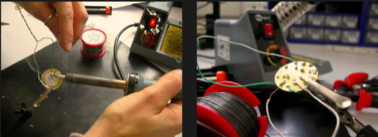

This week the task was to mill a PCB and solder its respective components.
I've never really worked with electronics before, so I was a bit nervous about making a PCB from scratch. It turned out to me a much simpler process than I had thought.
MILLING
Milling the PCB was a fairly straightforward task, since I was using fabmodules. Fabmodules automatically creates the toolpaths for the Modela, so not much was left to adjust. I uploaded Neil's .png with the PCB design and selected the mill bit I was going to use: 1/64 mill bit for the interior traces, 1/32 mill bit to cut out the external border
I set up the copper plate on the sacrificial board, and taped it down it as flat as possible.
At fablab EDP, we use a Modela with an attached Dremel tool (a handy hack done by Ferdinand Meier during fabacademy 2013), so the home position is now outside the actual milling area.
As I did a shallow contour of the PCB on the copper plate, it became apparent that the surface was not perfectly flat. The plate had been previously used so it was actually pretty tilted, as you can see in the picture:
I nevertheless went on to mill it, thinking that a lot of offsets would somehow fix the uneveness of the cut.
And indeed they did. So I went on to cut out the contours; I used a bigger mill (2mm) than the suggested 1/32 (0.8mm).
As I took out the pcb from the plate, it was looking pretty good. But as I cleaned it up I realized it was not that good after all: the outside paths had been destroyed by the power of the 2mm mill bit! This was a clear PCB fail...
And so, I went on to mill a second PCB, this time using the right mill bit for the outside contours. The second one did not fail.
Now that the pcb was done and carefully cleaned (steelwool, followed by water and soap), it was time to add the components and start soldering. To help me in the process, I printed out a paper with a bigger version of the board image. I then taped all the tiny components to it, like numbers on a bingo board -- this proved to be a rather useful guide to my soldering operations.
Three notes on the milling process:
- start by manually setting up the "right" home.
- remember to do this with the Dremel tool on, or the mill may break when it touches the surface;
- after changing millbits, remember to clear the Z by goin up or down.
SOLDERING
As I had never soldered before, I took some time to try it out
Three mental notes about the process:
- to avoid shaking hands and improve the precision of the solder drops, make sure you keep elbows well placed on the table
- desoldering is way harder than soldering - with both desoldering wick and pump: so don't use too much solder on each pad and make sure you heat it up properly before applying the solder.
- make sure the bit is properly cleaned before soldering the pad, this makes a huge difference. Instead of using the wet sponge that is attached to the soldering station, I chose to use a piece of paper. Just make a hole in the paper with the bit and it comes out nice and clean...
Here's the final outcome: